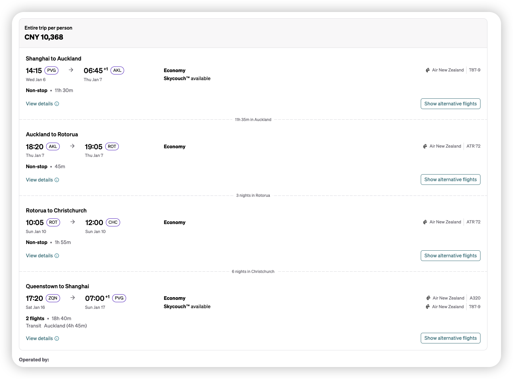

D1｜上海出发夜航前往奥克兰
4人同行｜奥克兰只转机｜罗托鲁瓦3晚｜南岛从基督城自驾到皇后镇。把需要下单的每一项集中在这一页。
1月16日从 Queenstown 起飞；通常需转机，抵达上海日期大概率为1月17日，以出票时刻为准。


Tekapo、Wanaka 的行程保留停留与休息时间。

基督城取车，皇后镇还车，一路向南。

米尔福德峡湾由巴士加游船完成，不赶夜路。
国际航班是全程的锚点；国内段需围绕抵达与租车取还时间安排。
1月是新西兰暑期旺季。先订可取消价，航班出票后再细调。
选市中心 / Lakefront；步行吃饭方便，活动接送覆盖更好。
优先湖边与可步行区域；观星晚结束后不再开车。
湖边或镇中心；安排一整天慢旅行，不换酒店。
中心区适合峡湾团接送；Frankton 适合停车与预算控制。
北岛以航班、接送和一日团为主；南岛自驾从 Christchurch 取、Queenstown 还。
Christchurch Airport。国内航班抵达、取行李后再取车；当天目的地是 Tekapo。
Queenstown Airport。按航班起飞时间倒推，国际航班建议至少提前2.5小时抵达机场。
4人 + 4只行李箱：中型 SUV 或更大。下单前看“行李容量”，不要只看座位数。
活动以官方页面最终条款、年龄/体重限制和当天天气为准；高空与水上项目优先选可改期票。
预留 2.5–3 小时；重点 Champagne Pool 与地热步道。自驾 / 接送方式在订票前一并确认。
选择含接送或确认酒店到场地的交通。订前告知4人中是否有素食、过敏或儿童餐需求。
08:15前报到；从报到到结束约2小时。带泳衣、毛巾；按运营商要求检查游泳能力、体重与健康限制。
漂流后轻食再前往。建议买缆车+5圈组合；抵达后先看当天排队情况与末班下山时间。
天气敏感且1月日落晚。确认集合点、保暖要求和改期/退款规则；若云层厚，保留为可取消项目。
上午留空作为天气缓冲。订前查看体重、健康、摄影套餐和取消政策。若改跳伞，用本日替换，不建议两项同日。
全程约12小时。比自驾轻松；带防水外套、保暖层、晕车药、充电宝。确认酒店接送点与上车时间。
以下按“在哪里吃、吃什么、何时订”整理；具体店铺以临近出行时的营业时间和订位开放日为准。
必做：D3 的 Hāngi 晚宴已包含正餐。
日常：湖边早午餐、咖啡和新西兰烤肉。
预订：只需订晚宴；D4 漂流后午餐选择快、轻、易补水的餐厅。
Tekapo：观星前吃早一点，避免太饱或离集合点太远。
Wanaka：D7 留给湖边咖啡、早午餐和轻松晚餐。
预订：周末晚餐建议提前1–2天。
推荐结构：D8 小镇晚餐；D9 秋千后庆祝餐；D10 峡湾回城后简单热食。
预订：景观餐厅与热门牛排/汉堡店，建议提前3–7天查位。
打钩仅保存在当前浏览器，适合出发前逐项核对。
图片：Unsplash 旅行风光图片，仅作页面氛围展示。行程与预订信息为出行规划清单，不替代航空公司、酒店、租车行或活动运营方的最终条款。
不搬运创作者原图；以下关键词能直接找到与当天景点对应的实拍构图。
Wai-O-Tapu：“Wai-O-Tapu 香槟池”
Kaituna：“Kaituna 5级漂流”
Skyline：“Rotorua Skyline Luge”
Tekapo：“蒂卡波湖 好牧羊人教堂 银河”
Mount Cook：“库克山 胡克谷步道”
Pukaki：“普卡基湖 自驾”
Wanaka：“瓦纳卡湖 孤独的树”
Cardrona：“Cardrona Arrowtown 自驾”
峡湾：“米尔福德峡湾 游船 瀑布”
截图报价为每人 CNY 10,368；价格与座位以最终付款页面为准。

优先从官方页面下单；第三方平台仅在退改政策或价格明显更好时考虑。
地热公园。官网购票
Te Pā Tū 毛利文化与 Hāngi。官网预约
首选1月9日08:30班次。Kaituna Cascades官网
建议 Gondola + 5 Luge。Skyline Rotorua官网
优先可改期产品。Dark Sky Project官网
步道免费；出发前查道路与步道状态。DOC官方信息
预留天气改期。Shotover Canyon Swing官网
选择 Queenstown 出发的巴士+游船。RealNZ官网